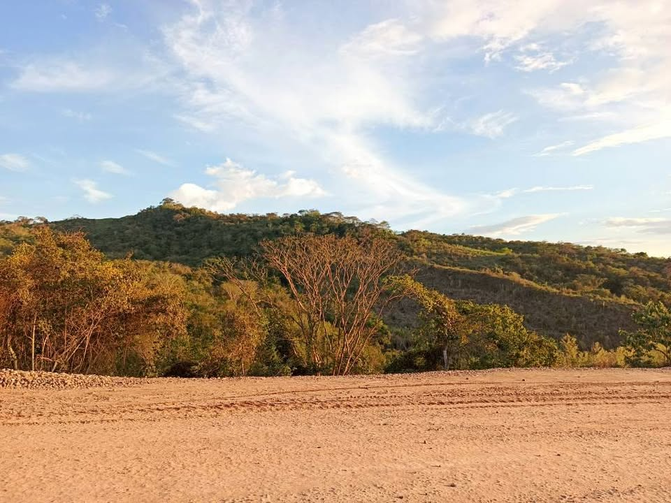

PEN105 7 ha

🌿🏞️ OPORTUNIDAD DE INVERSIÓN EN SAN MARTÍN 🏞️🌿 ( tambien CAMBIO por otra propiedad en tarapoto) Se vende terreno rural de 7.0954 hectáreas, inscrito en SUNARP y con documentación en regla. A 30 min de tarapoto 📍 Ubicado en el sector Yacucatina – jurisdicción de Juan Guerra, en una zona con gran potencial de crecimiento y valorización. ✅ Más de 7 hectáreas de terreno. ✅ Título de propiedad inscrito en SUNARP. ✅ Bosque natural y montaña virgen. ✅ Cercanía a red eléctrica. ✅ Ideal para proyectos turísticos, ecológicos, reforestación, conservación, casa de campo o inversión a futuro. 🚧 L